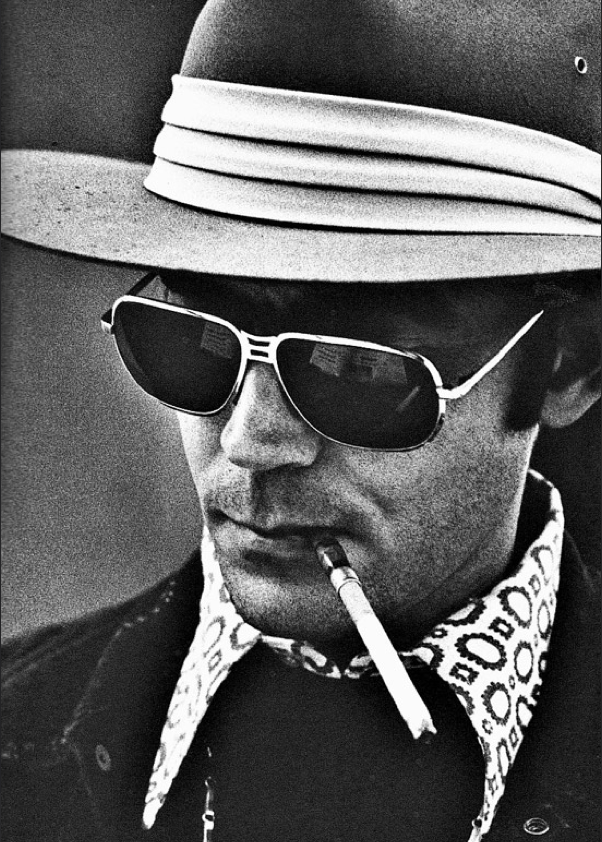

I’m a writer, creator, trainer, and experienced software professional with a background in journalism, which, at its heart, is storytelling, interviewing, and communication. Through my many interests and experiences, I’ve learned that I possess an aptitude for communicating technical or complex subjects to others; that is, cutting through the jargon and focusing on the important concepts behind tasks, processes, and products. I’m not satisfied unless others understand what I’m trying to tell them.
My role includes the pruning and grooming of product backlog and bug fixes, prioritization and presentation of feature work and road mapping for the Accounts Payable, General Ledger, and Job Cost products, as well as various partner integrations. I follow Agile principles to facilitate and direct the work of the largest development team in the company (8 devs, 3 QAs). I work directly with stakeholders to develop plans and strategies around product enhancements, present projects to the development team, and aid in the estimation, prioritization, and gathering of business requirements to meet the needs of clients. I work with a complex SQL-based relational database, and understand the capabilities and business logic that are available in this type of architecture.
I worked directly under the VP of Customer Success, and was given responsibility over enterprise client implementations and special projects relating to public sector project management. I gathered requirements to relay to the development team for future product enhancements, and prioritize the backlog of features and bugs to be fixed.